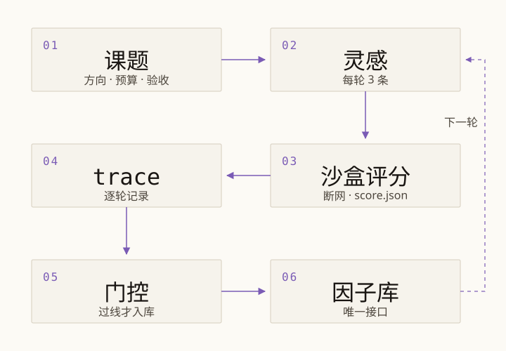
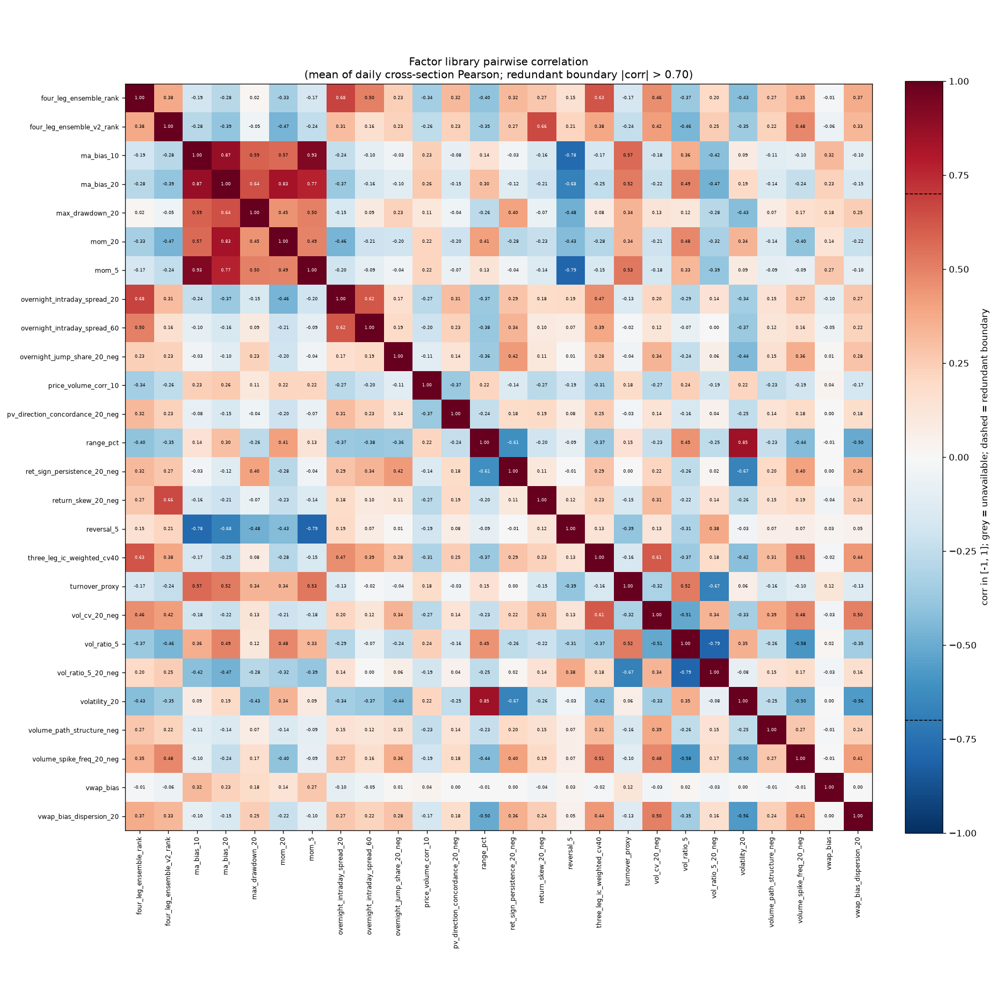

系统全景
三层分工，一个接口
每天的日常工作分成三层：数据层准备数据，研究层生产因子与信号，生产层把信号落成调仓单。三层之间只在一处交接，交接物是因子库里的因子工件。
-
01
数据层
akshare（锁 1.18.97）每日增量，CSMAR 离线包回填；校验完整性、异常值与复权一致性后落 Parquet 缓存，并预计算涨跌停上下限、复权价、交易日历与分红送转。数据体检不过，当天跑批直接中止。
-
02
研究层
离线的 Agent 内循环，可以连跑数天。它读同一份缓存数据，在沙盒里评估假设，产出因子工件与信号工件，只把过线的因子写进因子库。研究层不接触生产账户，也不下单。
-
03
生产层
每个 T 日收盘后跑批：增量数据、重算 pool 因子、AutoML 截面打分、凸优化组合、整手与涨跌停预过滤，落成 T+1 调仓单，人工跟单后回录成交。
研究层与生产层解耦，因子库是唯一接口。研究层只写入过门控的因子工件，生产层只读 status 为 pool 的条目；库里的每一条都带指标与血统，可以追到来源与代数。
Agent 因子挖掘
一个课题接着一个课题地跑
研究层在离线环境里连续运行数天：Agent 提出假设、写出因子代码、拿回评分，只有合格的因子才进入因子库。每一步都留下记录，结论可以复核。
-
课题
因子挖掘的预算单元：方向边界、禁区、验收标准与排序键。由人工下达，或由 Agent 从因子库的空隙提出后交人工批准。活跃课题上限 3 个。
-
灵感
课题内的一次挖掘尝试：一条具体假设加构造思路。一轮并行评估 3 条灵感，全部完成才进入下一轮。
-
轮
课题内的节拍单位。一次 propose 产出若干条灵感，评估全部结束才推进；调度器在课题之间以轮为轮转单位，单个课题 30 轮熔断。
-
trace
课题内各轮假设、评估结果与反馈的按序记录，作用域限单个课题。下一轮 propose 时取最近若干条注入上下文，Agent 看得见自己试过什么、为什么被拒。
-
沙盒
断网 Docker，行情数据只读挂载。因子代码在沙盒里跑通、算分，产出 score.json；主流程拿不到写权限，评分不受本机状态影响。
-
门控
进库前必须全部通过的判定集合，给出单一的过线或不过线结论。过线的因子带上指标与血统入库，不过线的记进 trace 回到下一轮。

- 一轮
- 3 条灵感并行
- 活跃课题
- 上限 3 个
- 熔断
- 单课题 30 轮
- 休眠
- 连续 3 轮无产出
- 完成
- 入库 10 个低相关因子
因子库与门控
26 个因子工件，四层防御守着入口
因子库是研究层与生产层之间唯一的交接物。每一次入库都要过门控，入库之后还要定期整库，把高相关的因子挡在外面，让 pool 保持在一个可解释的规模。
- 因子工件
- 26
- 种子
- 13
- 变异
- 10
- 交叉
- 3
26 个因子工件 = 13 个种子 + 10 个变异 + 3 个交叉。13 个种子是第 0 代，13 个挖掘因子是第 1 代，全部来自 run flagship-mining，当前 26 条都在 pool。
四层共线性防御
-
源头分流
上下文里注入方向分布地图：每个方向已有多少因子、质量如何、近期被拒率多高。Agent 被要求优先走低密度方向，从源头减少同族因子的堆积。
-
生成避让
提出新假设时，附上同方向已入库因子的摘要，只给假设与构造思路、不给代码。Agent 看得到同方向已经有什么，避免换个写法重复造同一个因子。
-
评分折扣
评分按
score = quality × (1 − |max_corr| / 0.7)折扣，折扣写进 score.json。相关性越高，分数被压得越低，奖励信号与入库口径保持一致。 -
入库门控与整库
进库前检查
|max_corr|，超过 0.7 直接拒绝；定期整库时同一相关簇只留最强的一条；pool 容量不超过库内总条目数的一半，保持库的多样性。
血统链与 trace
每条库条目都带 lineage{op, parents, run_id, generation}：op 取 seed、mutation 或 crossover，另外记录父因子、来源 run 与代数。当前 parents 均为空，13 个种子停在第 0 代，13 个挖掘因子挂在 flagship-mining 的第 1 代。
trace 是课题内各轮假设、评估结果与反馈的过程记录，作用域限单个课题；血统是因子入库后写进 registry 的结构化记录。两者都保留，任何一个入库结论都能追到它是怎么来的。

AutoML 与 AutoResearch
信号合成已经上线，研究自动化还在路上
左栏是每天都在跑的 AutoML 链条，右栏是 M5 的远期路线。两栏并列展示，已实现与规划中的边界写清楚。
已实现
AutoML：从数据集工件到信号工件
-
数据集工件
quant/automl/dataset.py把因子工件的 value 按(date, instrument)拼成宽表，附上 label 与 delay_days，落成 parquet。特征列原样使用，不做归一化或剥离。 -
AutoGluon
quant/automl/trainer.py封装 Tabular 训练，本机 GPU 上跑，presets 用 medium_quality。旗舰配置 1800 秒、约 19.9 万行；指数增强配置 600 秒、约 78.5 万行。 -
walk-forward
quant/eval/model.py与scripts/eval_model_walkforward.py负责切分：AutoGluon 只训单个窗口，训练窗口与打分窗口的切分、拼接都在 Python 侧完成，逐窗口前移。 -
模型注册表
quant/automl/rolling.py按训练截止日把模型落到runs/automl/rolling/v_<train_end>/，旁边一份同名.meta.json。每 20 个交易日重训，窗口 500 天，预热 60 天，取最新且未过期的版本。 -
信号工件
训练输出 parquet
(date, instrument, score)，同一天同一标的唯一。组合层与回测只读信号工件，不直接调用模型，训练与执行因此可以分开复现。
规划中 · M5
AutoResearch：让 Agent 改模型
AutoResearch 是 M5 的远期路线，当前尚未实现，也没有训练产物。下面写的是方向，不是已交付的能力。
-
Agent 调参
把训练配置当作 Proposal 的对象，Agent 在内循环里提出参数组合，交回同一套沙盒评估，再按结果决定下一轮往哪里试。
-
网络结构演化
让 Agent 改动模型结构代码，沿用现有的构造、评分与门控流程；结构提案与因子提案共用一套 trace 与预算约束。
-
样本外 IC 打分
评估以 walk-forward 的样本外 IC 为准，避免在训练窗口里自证。路线参照 RD-Agent 的调参与结构协同演化，先把接口留好，再逐步接入。
关于作者
陶唐，上海财经大学
数据科学与大数据技术 2024 级本科生。关注因子研究、模型合成与组合执行的可复现实现，ASTER 从数据层到每日跑批由我独立设计与开发，代码、文档与实验记录全部开源。
- 学校
- 上海财经大学
- 学院
- 信息管理与工程学院
- 专业
- 数据科学与大数据技术
- 年级
- 2024 级
- 学号
- 2024111155
- 申请日期
- 2026-10-17
- GitHub
- 001eander
- 学业
- GPA 3.81/4.0，专业排名前 5%
荣誉与竞赛
- 国家奖学金
- 华数杯 国家一等奖
量化实习
三段量化实习，分别落在因子研究、策略回测与组合执行三个环节。
- 量化研究实习，因子挖掘与因子工件评估
- 量化研究实习，账户回测与执行细节
- 量化工程实习，数据更新与每日跑批